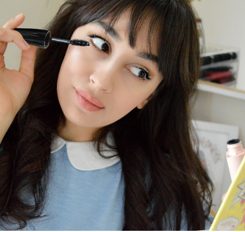
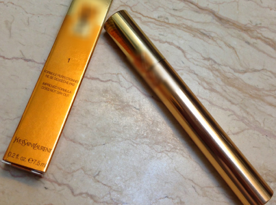
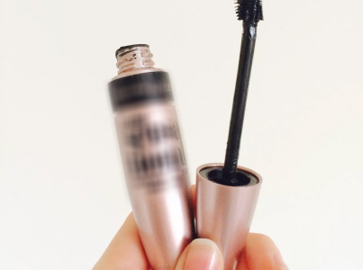
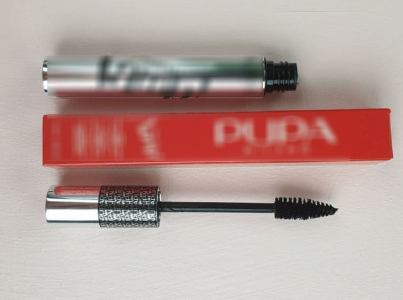
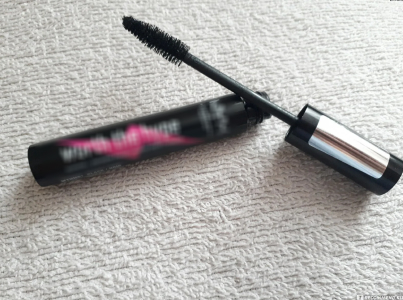
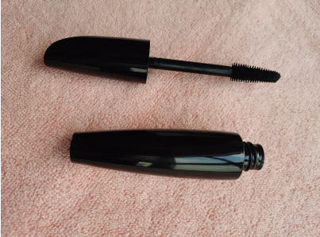

Blog di Luisa Mancinelli
"Segreti femminili”
Creamo il look più bello e scegliamo un mascara giusto per questo
Ehi, ragazze! Come sempre voglio iniziare il mio post con gratitudine: sono molto felice che vi sia piaciuto il mio articolo precedente sulle creme per il viso. Grazie a tutte per la risposta così vivida! Come promesso, questa volta farò l'analisi di diversi mascara. Come al solito pubblico subito due foto: le mie ciglia naturali e dipinte con il mascara vincitore di questa recensione.
-
1250
-
750
La magia dello sguardo
Gli occhi sono lo specchio dell'anima. L'affermazione è corretta, ma vale anche la pena aggiungere che si può incantare e affascinare un uomo con un solo colpo di ciglia. Questa affermazione è totalmente giusta... a meno che non ci sia qualcosa con che fare il colpo, LOL. Ecco le foto di quale effetto volevo ottenere, scegliendo il mascara
Ho preso 5 campioni di mascara.
Ho preso 5 campioni di mascara. Dopo che l'ultima volta che mi hanno beccata per la menzione di marchi in modo negativo, io apro solo il nome del marchio vincitore. Non mi va di essere multata un'altra volta, LOL.
Marchio №1
Lo conoscete tutte, questo è lo stesso marchio che promette un volume X5 e un aumento della lunghezza di una volta e mezza. Prezzo stimato - circa 80 euro. Quindi, lo metto sulle ciglia. La lunghezza è apparsa, e il volume sembra aumentarsi a causa di questi brutti grumi.
La conclusione è inequivocabile: non tutto l'oro che costa un sacco di soldi. Forse questo mascara è adatto a qualcuno, ma ovviamente non a tutti. Peccato per i soldi buttati via.
Marchio №2
Anche è stato preso dal mercato di massa, viene venduto in qualsiasi negozio di cosmetici. Il prezzo è un po' inferiore - circa 70 euro. Non promette l'aumento del volume di 5 volte, ma è pubblicizzato come “volume naturale”. OK, facciamo un test drive. All'inizio sembra davvero buono. MA! Dopo 2 ore, il mascara ha iniziato a cadere e mi ha trasformata in un panda con occhiaie sotto gli occhi.
Conclusione: se volete essere belle solo per 2 ore, il mascara vi adatterà. Ma perché pagare così tanto per solo 2 ore di effetto?
Marchio №3
Ho rischiato di comprare un mascara più economico - 30 euro da un marchio giovanile. Le recensioni erano molto buone. L'effetto è davvero molto bello
Il mascara è resistente, non cade dalle ciglia. Ero gia contenta finche non ho iniziato a togliermela. E' un lucido per le scarpe? Non si toglieva nemmeno con un rimedio speciale, gli occhi pizzicavano un sacco, ed ecco il risultato…
Conclusione - mai e poi mai. Non vorrei essere cieca!
Marchio №4
Questa volta, la scelta è caduta su cosmetici professionali, che vengono utilizzati per il trucco in un servizio fotografico e così via. E' costoso - quasi 130 euro. Il mascara è andato bene, ma a mio parere - non è troppo naturale. Per il trucco serale va bene, ma per il giornaliero - non molto.
Conclusione: se avete soldi extra che potete spendere per il mascara solo per il trucco serale, potete prenderne!
UPD: dopo una settimana, il mascara si è asciugato!!!! A quanto pare, i rimedi professionali devono essere spesi più velocemente. Insomma, 130 euro buttati via.
Marchio №5
Si riferisce anche ai cosmetici professionali, ma più ai curativi, piuttosto che ai decorativi. Il mascara-siero per il rafforzamento e la crescita delle ciglia, che allo stesso tempo tinge e li gira un po'. Il produttore scrive che questo mascara è fatto di componenti naturali, non causa allergie nella pelle delicata intorno alle palpebre. Quindi, guardiamo:
L'effetto è eccellente! Ho ”indossato" lo sguardo tutto il giorno - nessun granello di mascara non è caduto sotto gli occhi. Sono stata sotto di pioggia, ma niente è andato via. Il mascara è facile da togliere: non pizzica nulla, si toglie rapidamente dagli occhi. Ho notato un effetto interessante: dopo aver rimosso il mascara, le ciglia sembrano come se dopo la laminazione, a quanto pare, le nutre davvero bene:
Conclusione: sicuramente è il mio preferito, quindi rivelo il nome del marchio: Magic Mascara. Mi sono piaciuti lo sguardo, il volume e la lunghezza. Ma soprattutto, le qualità di cura del mascara. Le ciglia dopo l'uso regolare sono diventate un po' più spesse, piene di pigmento lungo la lunghezza - ora non mi dipingo ogni giorno. Allo stesso tempo, il prezzo è inferiore a quello dei marchi famosi.
UPD: ho ricevuto molte domande su dove acquistare Magic Mascara. Questo mascara-siero si vende attraverso saloni di bellezza e negozi di cosmetici professionali. Ma con un margine di 30%, 50% a seconda dell'avidità del venditore, LOL. Pertanto, ordino sul sito ufficiale del produttore. Sì, devo aspettare la consegna, ma è garantito il prodotto originale e anche il prezzo è più basso.
Ordinare con lo scontoCommenti
Sonia
Luisa, io e te siamo in qualche modo colleghe - scrivo anche recensioni di cosmetici, ma solo per le pubblicazioni stampate. Nel prossimo numero di Cosmo voglio fare una recensione sul mascara Magic Mascara, è un prodotto molto degno. Posso contattarti per l'intervista?
Isabella
Evviva! Finalmente un test drive di mascara. Ho già ordinato Magic Mascara, i tuoi consigli sono sempre TOP!!!
Sofia
Grazie tesoro, sei la miglior blogger di bellezza, non passo nessuna delle tue raccomandazioni
Catia
Ohhh, ho indovinato quale marchio si nasconde sotto il numero 1! Ho anche avuto dei grumi solidi - non capisco a chi si adatta questo mascara
Anna Maria
Luisa, grazie mille per il tuo articolo, come sempre è indicativo, oggettivo e interessante!